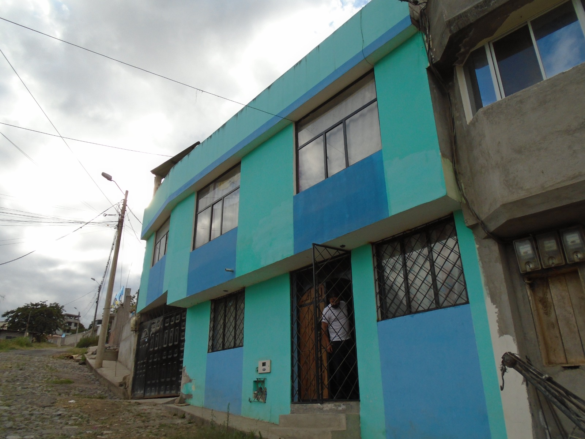
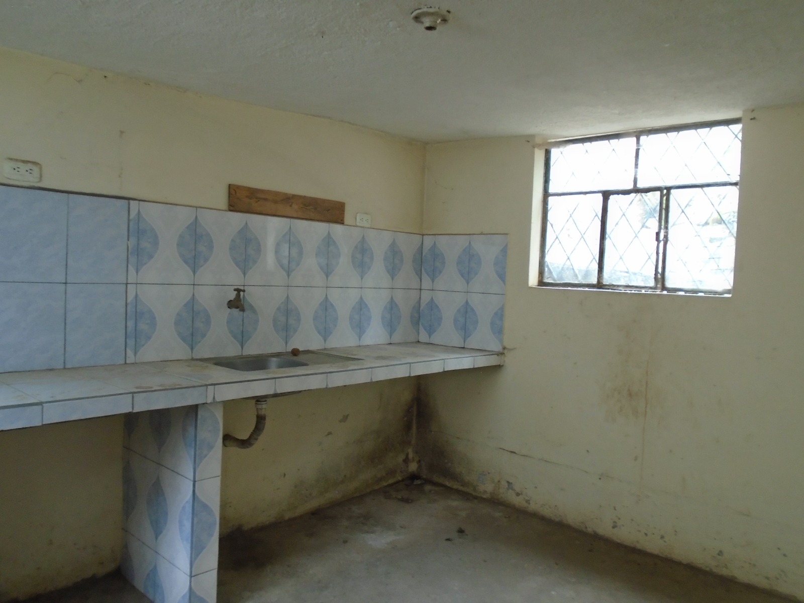
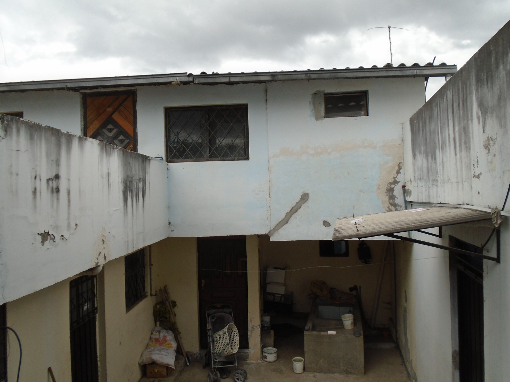
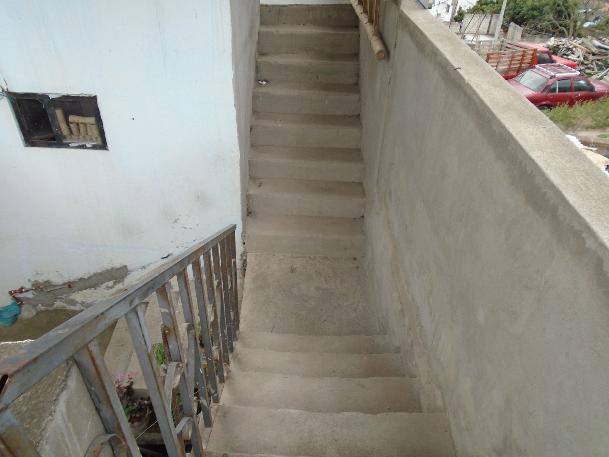
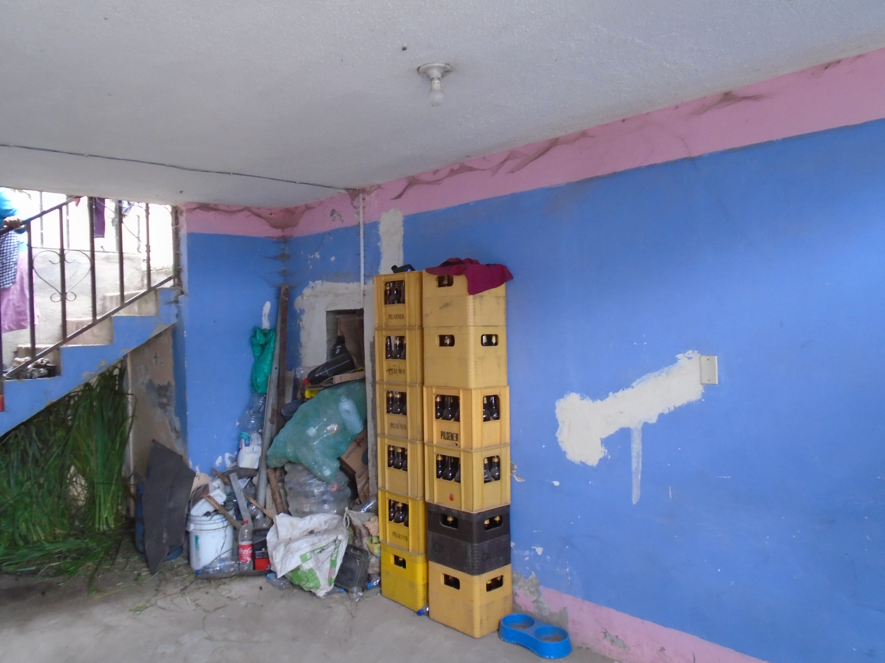
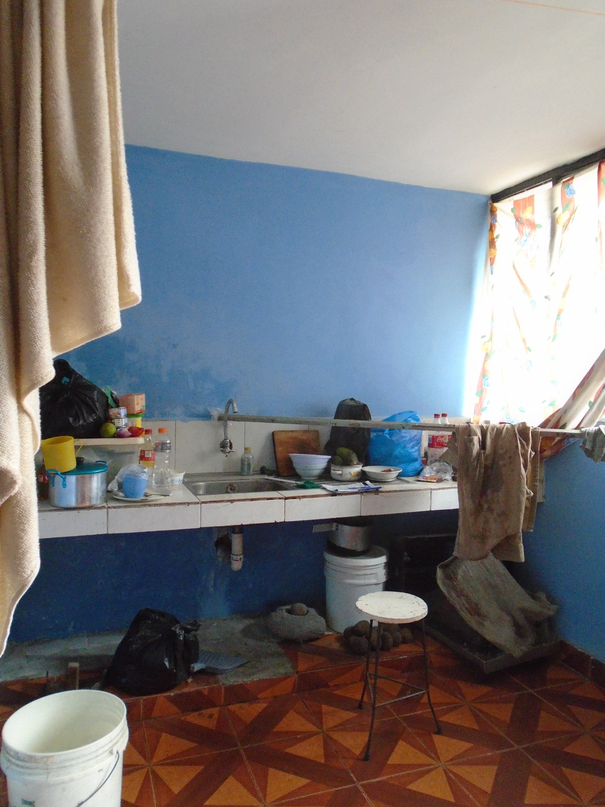
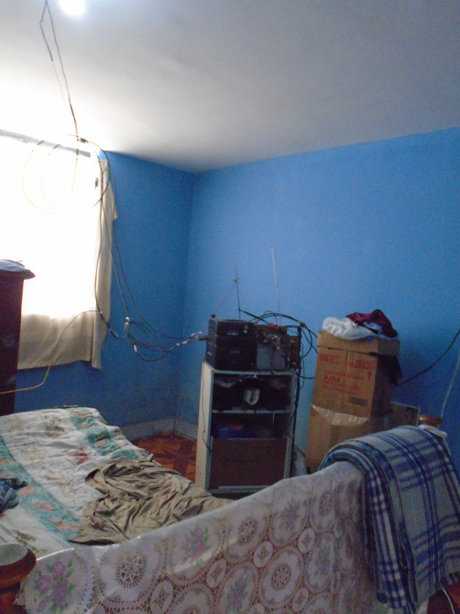
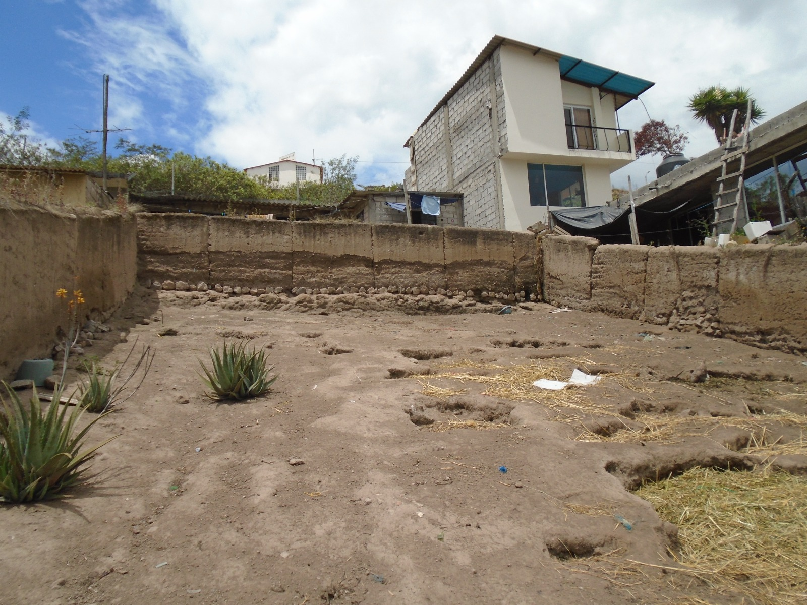
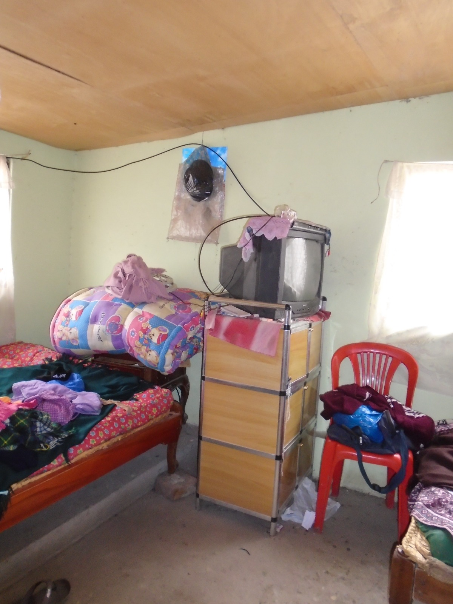

← volver al mapa
Casa - EC-RJ-153911
EC-RJ-153911 · casa · IBARRA, Imbabura
★ Oferta destacada









Datos del remate
| Avalúo pericial | $50,745 |
| Tipo de bien | casa |
| Área de construcción | 171.21 m² |
| Área de terreno | 470.67 m² |
| Cantón / Provincia | IBARRA, Imbabura |
| Dirección / Sector | Bellavista Bajo. calle sin nombre s/n y calle san carlos. |
| Señalamiento | Tercer Señalamiento |
| Fecha de remate | 2026-08-19 |
| No. de proceso | 10333202001083 |
Análisis vs. mercado
| Avalúo por m² | $296/m² |
| Mediana de mercado en la zona | $543/m² |
| Descuento vs. mercado | 45.4% |
| Comparables usados | 94 |
| Radio de búsqueda | 2000 m |
| Puntaje | 88/100 |
Descripción completa del avalúo
el inmueble materia de este avalúo está compuesto por terreno y construcción. el terreno es medianero con frente a la calle sin nombre en 10,78m, es alargado y de contorno irregular. el terreno presenta una fuerte pendiente positiva con respecto al nivel de la calle, por ello, se constató que se han realizado trabajos de movimientos de tierra para formarterrazas con los respectivos muros de contención, dos de las terrazas tienen una topografía planta donde se lasconstrucciones existentes y a través de un paso lateral se puede acceder hacia la parte del terreno libre que presentaun moderada pendiente positiva.
sobre el terreno se implantan dos construcciones informales de 2 plantas, separadas por un patio intermedio y están identificadas en el presente avalúo como: edificación frontal, está construída sobre línea de fábrica, está conformada por un espacio de ingreso-garaje cubierto (espacio únicamente para un vehículo pequeño) y dos unidades de vivienda más una terraza accesible que se accede a través de gradas exteriores semicubiertas ubicadas en el patio. edificación posterior,está conformada por dos unidades de vivienda más una terraza accesible que se accede a través de gradas exteriores ubicadas en el patio. las construcciones presentan un limitado diseño con poca ventilación e iluminación natural. edificación frontal, 2 plantas: cuenta con la siguiente distribución de ambientes: planta baja - departamento 1: 1 comedor-cocina, 1 dormitorio, 1 baño completo. esta unidad de vivienda se encuentra habitada y está arrendada. planta alta - departamento 2: 1 sala-comedor-cocina, 1 dormitorio, 1 baño completo. esta unidad de vivienda se encuentra habitada y está arrendada. la sra. montaluisa indico los ambientes de este departamento y confirmo que posee los mismo acabados del departamento de la planta baja. planta terraza: es un área de terraza accesible con un área semicubierta de lavandería. edificación posterior, 2 plantas: cuenta con la siguiente distribución de ambientes: no cumple con la altura de entrepisos que se establece en la norma de arquitectura. planta baja - departamento 3: 1 sala, 1 comedor-cocina, 2 dormitorios, 1 baño completo. esta unidad de vivienda se encuentra desocupada, presenta un notable deterioro evidenciándose el desprendimiento del estuco-pintura en paredes-tumbado incluso manchas por la falta de ventilación. planta alta - departamento 4: 1 sala-comedor, 1 cocina, 1 dormitorio, 1 baño completo. esta unidad de vivienda se encuentra habitada por la sra. luzmila montaluisa, quien informa que es la propietaria de la propiedad. planta terraza: es un á
calle sin nombre s/n y calle san carlos.
Límites: norte: con propiedad del señor luis enrique vaca y señora. 44.86m sur: con propiedad del señor julio vicente vaca. 44.35m este: con calle pública. 10.83m oeste: con propiedad del señor carlos ibadango. 10.65m
Clave catastral: 10015721008248000000000
Análisis de inversión
★ Buena oportunidadDescuento alto (45%); construcciones informales y terreno con pendiente pronunciada (requirió terraceo).
A favor:
En contra:
- Construcciones informales
- Terreno con fuerte pendiente
Análisis elaborado a partir de la descripción del avalúo — no es asesoría legal ni financiera.
Esta ficha es una copia de lo publicado en el sitio oficial de remates
judiciales de la Función Judicial del Ecuador, para consulta — no
reemplaza el expediente judicial. remates.funcionjudicial.gob.ec no da
un link propio por remate, por eso se generó esta página aparte.
Antes de ofertar, el expediente debe revisarlo un abogado.